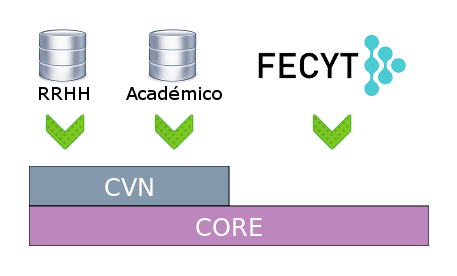

Portal del Investigador
El Portal del Investigador es un proyecto promovido por el Servicio de Tecnologías de la Información y la Comunicación (STIC) de la Universidad de La Laguna (ULL) que tiene como finalidad centralizar la gestión de la actividad y producción científica de los investigadores adscritos a la ULL.
El Portal del Investigador ha sido diseñado bajo el concepto de descomposición modular, permitiendo que cada componente sea utilizado de manera independiente pero a su vez pueda interactuar con otros módulos previamente configurados.
La arquitectura Modelo-Vista-Controlador (MVC) que provee el framework Django facilita la creación de aplicaciones o módulos que agrupan un conjunto de características asociadas al mismo concepto con capacidad de configuración propia.
Una característica importante del Portal del Investigador es cumplir con la filosofía del Dato Único de la institución académica, evitando así información redundada, por lo que es necesario el uso de Servicios Web para integrarse con las distintas fuentes de datos de la institución.
- CORE: Módulo de Gestión Centralizada
Zona común que contiene el conjunto básico de herramientas indispensables para el correcto funcionamiento del resto de módulos o aplicaciones del proyecto.
-
CVN: Módulo de Gestión del Currículum Vitae Normalizado
Se apoya en el Proyecto CVN de la Federación Española para la Ciencia y la Tecnología (FECYT).
Un Currículum Vitae Normalizado es un fichero en formato PDF (CVN-PDF) con tecnología CVN-XML inscrustada, de tal manera que la información normalizada en él puede ser extraída para su posterior tratamiento, dicha extracción es la característica principal de este módulo que permite la importación/exportación de datos curriculares.

El Portal del Investigador es un proyecto ambicioso, diseñado para ser utilizado por cualquier entidad, organización o institución que requiera de una gestión curricular certificada por la FECYT.
En la presente Sección se detallan brevemente las principales características que se contemplan en cada módulo.CORE: Módulo de Gestión Centralizada
-
Perfil de Usuario (modelo UserProfile)
El perfil de un usuario, relacionado con el modelo User de Django, almacena el número de documento de identidad del usuario y un código único empleado como clave en las distintas llamadas a Servicios Web de la institución académica.
Su función principal es representar el perfil de un Investigador.
-
Registro de Eventos (modelo Log)
Su funcionalidad principal es registrar y tipificar la actividad de un usuario en una aplicación en un momento dado.
-
Preguntas Frecuentes (FlatPages)
Permite la creación de una FAQ del proyecto multiidioma a través de la Interfaz de Administración de Django.
-
Template Base
Se proporciona una plantilla base (core/templates/core/base.html) con todos los elementos comunes del proyecto, cuyos bloques pueden ser sobreescritos desde las aplicaciones gracias al sistema de herencia de plantillas de Django.
La Imagen Corporativa y signos distintivos de la Universidad de La Laguna están sujetos a derechos de Propiedad Intelectual, por lo que deberán ser reemplazados.
CVN: Módulo de Gestión del Currículum Vitae Normalizado
-
Subir un nuevo CVN
Un Investigador podrá subir un nuevo CVN siempre que este sea válido, es decir, creado desde el Editor de CVN de la FECYT y sin modificaciones o manipulaciones posteriores.
Del CVN-PDF se extrae toda la información relevante para la institución y se almacena en base de datos.
-
Descargar una copia del CVN
Un Investigador podrá descargarse en cualquier momento una copia de su CVN.
-
Exportar información de la Institución Académica a un CVN
Con el objetivo de facilitar la creación de un CVN inicial a los investigadores, se genera un CVN-PDF que contiene exclusivamente información de interés extraída de las distintas bases de datos de la institución, sólo accesible desde llamadas a Servicios Web.
El CVN-PDF generado debe ser añadido (importado) en el Editor de la FECYT posteriormente, para poder así ampliar el CVN inicial.
-
Visualizar información extraída de un CVN
Se ofrece a los investigadores la posibilidad de visualizar el contenido extraído de sus CVN.
Por otro lado, la opción "Informe ULL", se emplea para visualizar la información de un CVN determinado, concretamente el del usuario "GesInv-ULL". Esta funcionalidad está diseñada para mostrar toda la producción científica de la institución.
-
Generación de Informes
Genera un Informe en PDF o CSV con los datos de producción científica de cada departamento o área de conocimiento a partir de la información extraída de diferentes Servicios Web.
-
Limpieza de registros duplicados
Busca pares de elementos similares en los CvnItem insertados (posibles duplicados) con el objetivo de unificarlos.